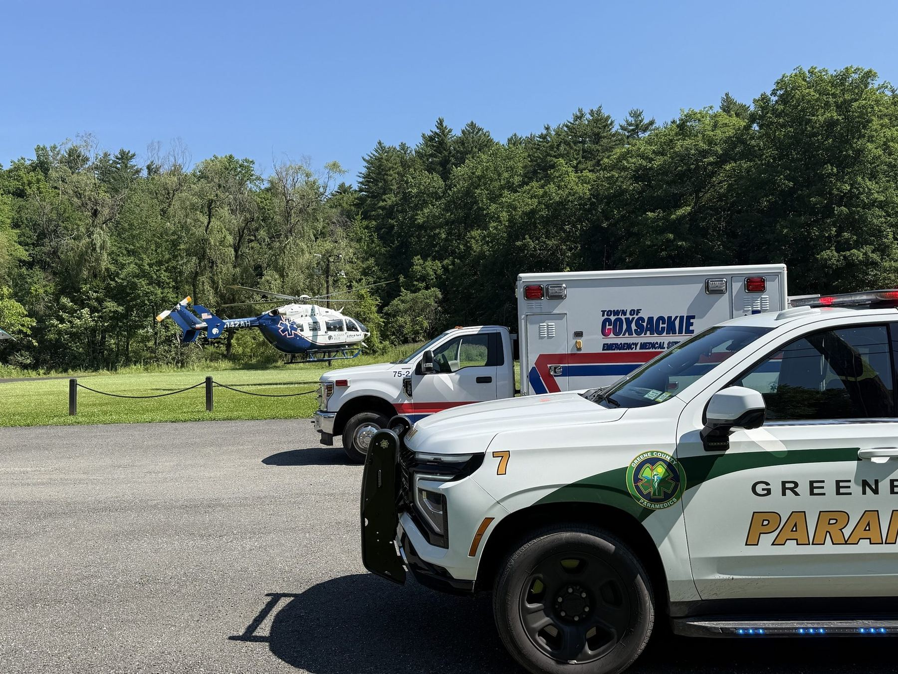

The fly car system
You call 911.
You call 911.
We're already
moving.
Your local ambulance responds — and so does a Greene County Paramedic, in a rapid-response SUV carrying every medication and intervention New York State allows a paramedic to provide, plus the monitors, infusion pumps and ventilators usually found on a critical-care transport. We start advanced care where you are, then ride with the ambulance all the way to the hospital.
Every call we run is a 911 call — we don't do inter-facility transfers. It's a model built for a county of mountains and long roads, and we've been refining it since August 1, 2000.
Read our full history
"When it's serious, we ride with you."
For critical patients, the paramedic stays in the ambulance with you all the way to the hospital — however far that is.